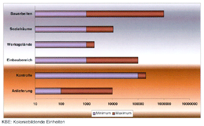

Trotz lückenhafter Kenntnisse über das auf Deponien vorgefundene Keimspektrum zeichnen sich hinsichtlich des Auftretens von Problemkeimen Schwerpunkte ab. Diese sind häusliche Abfälle, in denen sich erhöhte Gehalte an Fäkalkeimen finden, fehlchargierte Krankenhausabfälle, die auch Mikroorganismen der Risikogruppe 3 enthalten können sowie Bereiche mit erhöhter Freisetzung von Pilz- oder Actinomycetensporen (z. B. Aspergillus fumigatus oder Nocardia asteroides) auf Grund der Abbauprozesse im Müll.
Typische Fäkalkeime sind z. B. die Bakteriengattungen Escherichia, Yersinia, Shigella und Salmonella sowie das Hepatitis-A-Virus. Hier ist besonders bei mangelnder Hygiene am Arbeitsplatz die orale Aufnahme darmpathogener Keime möglich. Dies kann dann z. B. zu Durchfallerkrankungen führen.
Eine Darminfektion ist aber auch durch den Verzehr unsachgemäß aufbewahrter Nahrungsmittel, insbesondere bei warmen Außentemperaturen, möglich.
Hepatitis-B-Viren können u. a. über blutkontaminierte Abfälle aus fehlchargierten Krankenhausabfällen, wie z. B. Wundverbände oder Kanülen, in den Müll gelangen.
Bei der Bearbeitung organischer Substanzen (Kompostierung, biologische Behandlung) muss mit vermehrter Freisetzung von Pilz- und Actinomycetensporen gerechnet werden. Aus anderen Arbeitsbereichen, wie z. B. der Landwirtschaft, der Pilzzucht oder der Käseherstellung, ist bekannt, dass hohe Konzentrationen von Pilzsporen in der Luft Erkrankungen der Lunge verursachen können. Dies sind z. B. die Exogene Allergische Alveolitis (EAA) oder obstruktive Atemwegserkrankungen (s. Glossar, Anhang 6). Die Hintergrundbelastung an Keim- und Pilzsporen unterliegt Schwankungen und beträgt durchschnittlich 102 bis 103 KBE/m3. In Abhängigkeit z. B. von Luftbewegung, Luftfeuchte und Pollenflug können sich jedoch Unterschiede im Bereich von Zehnerpotenzen ergeben. Abbildung 1 zeigt eine Übersicht, über Konzentrationen an Pilzsporen und Bakterien, die an unterschiedlichen Arbeitsbereichen auf Deponien ermittelt wurden.
Bei diesen luftgetragenen Mikroorganismen ist eher ein allergenes Risiko zu berücksichtigen. Aber auch Infektionserreger können über den Luftweg transportiert werden.
Abbildung 1: Konzentration an Pilzsporen und Bakterien in der Luft auf Deponien in KBE/m3
